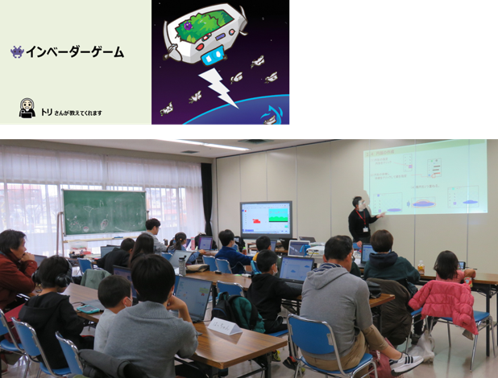
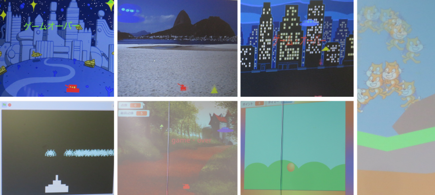

2023/11/19 午前と午後の２回開催
第60,61回 みんなでインベーダーゲーム作りと電子工作
午前は初めて参加の入門コースにScratch共通テーマ みんなでインベーダーゲーム。午後は移動するラズベリーパイの魔改造に挑戦中です。
本日の青梅Dojo出欠確認です
参加したニンジャは午前23名・午後10名の延べ33名。保護者家族9名、メンター5名で延べ47名が参加してくれました。
そろそろメンターも忙し過ぎるのでボランティア募集中、そして上級ニンジャがユースメンターとして大活躍しています！
サプライズはいつも海外のニュージーランドからオンライン参加している「しん」さんです。いつものように今日も画面上のしんさんにメンター自己紹介を呼びかけますが、 なんと会場に現れるという小芝居でスタート。南半球にあるニュージーランドの大学が夏休みの間、来日しているのでCoderDojo青梅にも応援に来てくれました。
午前ワークショップ（Scratchプログラミング入門・初級）
午前は自分の興味にあわせて３ブロックに分かれてワークショップを行います。
１．はじめて参加するニンジャ向け入門プログラミング
本日のScratch入門コースの講師はメンター「トリさん」です。インベーダーゲームの作り方をレクチャーしています。

２．レベルアップ講座
スーパーマリ〇風のスムーズな移動プログラミングは中学生ユースメンターの「Haya」です。Scratchレベルアップ講座を担当。
３．自分で自由にテーマを決める編
Scratchで好きな作品づくりもしていますが、マイクロビット(micro:bit)のライントレース自動走行にも挑戦しています。 今日は大型のコースも用意して試し走行をやりました。一応走行できるものの、スムーズに速く走るにはセンサーの調整とプログラミングのチューニングが必要です。
４．オンラインはお休み中です
オンラインメンターの「しん」さんが日本にいるので４月までオンラインはお休みです。
残り30分間、みんなの成果発表会
ロジックは共通だけどデザインは自由なので、ちょっとずつ違う作品が発表されました。

午後ワークショップ（ラズパイと電子工作）
来月開催「🏆CoderDojo青梅カップ2023」の最終調整。メンターのサンプル作品を紹介して、各自、すぐに作業開始。
今年も青梅IT未来塾の修了生2名が参加してくれます。初めてニンジャにもLinuxコマンドから練習開始。 他のみんなはラズタンクの走行テストと改造に取り組みます。キットや教科書があるわけではないので、配線図やpythonコードはCoderDojo青梅のブログを参考に研究するというかなりハードな修行です。 青梅市でLinuxとpythonができるメンターを探しています（募集中です）。
CoderDojo青梅 ニンジャのみなさん

次回は12月10日(日)開催です。
Connpassでイベント告知。参加をお待ちしています。参加申し込みはこちらのConnpassから
 CoderDojo青梅にご質問メールはこちら
CoderDojo青梅にご質問メールはこちら
😃